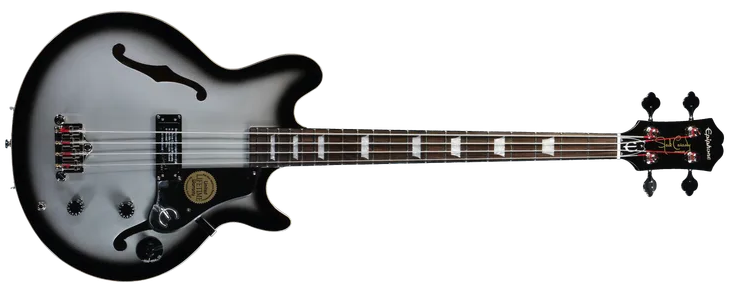
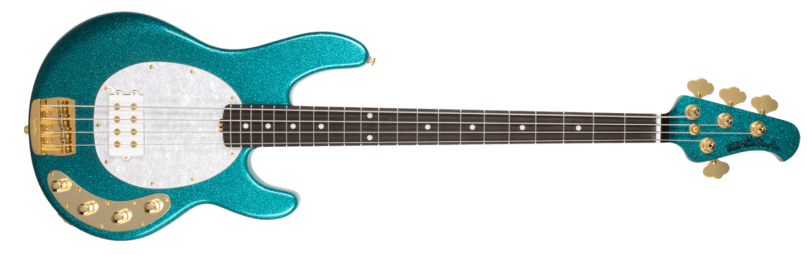
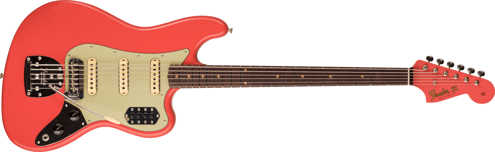

Epiphone Jack Casady
Descripción
El bajo Jack Casady Signature fue diseñado por
Casady en colaboración con Epiphone y es la
culminación de años de experimentación del bajista
de los Jefferson Airplane y Hot Tuna para encontrar
un instrumento excelente, tono eléctrico equilibrado y la respuesta de un bajo acústico.
Especificaciones
- Cuerpo: Maple semihueco
- Diapasón: Caoba
- Trastera: Rosewood
- Micrófonos: JCB-1 Low-Impedance Humbucker
- Cantidad de trastes: 20
- Controles: Master Volume, Master Tone, 3-Position Tone Switch
- Hardware: Negro
Musicman StingRay
Descripción
Presentado por primera vez en 1976, StingRay
ha sido reverenciada como uno de los bajos
más emblemáticos de la historia. El StingRay
fue el primer bajo de cuatro cuerdas en ofrecer
ecualización activa incorporada. El flagship de la linea
MusicMan, el StingRay de hoy es
el mismo que hace unos cuarenta años, con
una construcción sólida, puente de acero macizo
y configuración de clave de afinación 3 + 1
y la popular humbucker MusicMan. Todos esto combinado
producen una apariencia, sensación y sonido que son notablemente inconfundibles.
Especificaciones
- Cuerpo: Fresno
- Diapasón: Maple Seleccionado
- Trastera: Rosewood
- Micrófonos: Alnico Humbucker Music Man Standard
- Cantidad de trastes: 21
- Controles: Master Volume, EQ de 3 bandas
- Hardware: Dorado
Fender Bass VI
Descripción
El Bass VI es un fiel tributo al arma secreta de los músicos
temerarios que se han atrevido a aventurarse en sus mundos sonoros
desde su período de producción original, entre 1961 y 1975. Afinado
una octava más baja que una guitarra y con un vibrato de estilo
vintage, el Bass VI es el compañero ideal para guitarristas o
bajistas que deseen despejar territorios inexplorados.
Especificaciones
- Cuerpo: Fresno
- Diapasón: Arce
- Trastera: Indian Laurel
- Micrófonos: Fender Designed Alnico Single-Coil
- Cantidad de trastes: 21
- Controles: Master Volume, Master Tone, 2-Position Slide Switch for Bass-Cut "Strangle" Circuit
- Hardware: Cromado